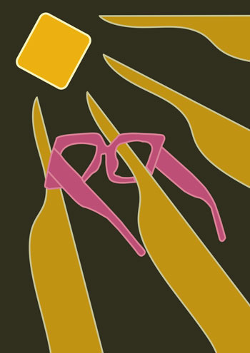
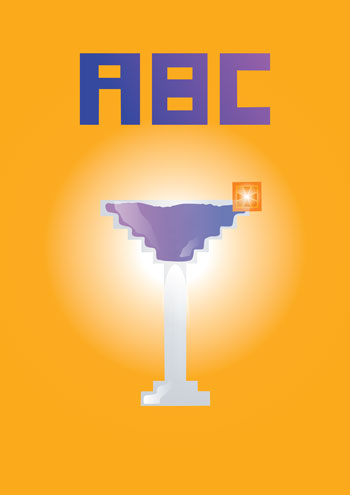
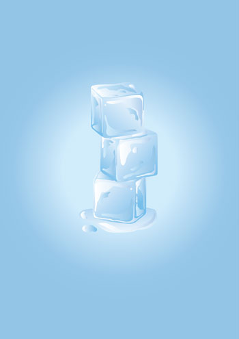
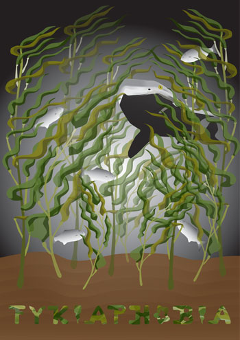
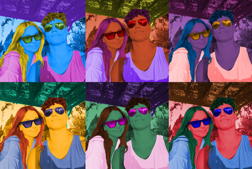
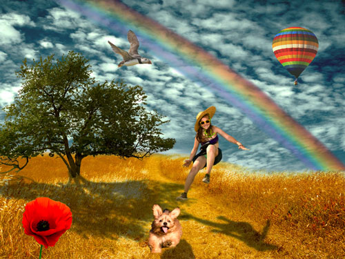
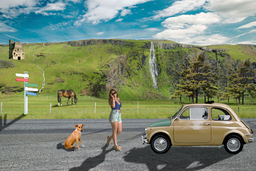

U Illustratoru smo se najprije upoznali sa sustavima boja, transformacijama, multipliciranjem te grupiranjem.
Prema pokusnom cvijetu, ovo je moj prvi samostalni rad; koristila sam sve naučene tehnike uz rotacije, skaliranje i transparencije.


Upoznavanje sa složenim objektima i gradijentima.
Samostalni rad u kojem sam koristila različite vrste gradijenata i transparencije za privid trodimenzionalnosti.


Projektni zadatak 1 - tema "podmorje": suma svih naučenih tehnika i alata u adobe illustratoru.
Photoshop
Uvod u photoshop bila je vježba tehnika retuširanja fotografija za postizanje realističnog efekta; ukljanjanje nedostataka na slici te lokalne i globalne korekcije boja.
U sljedećem smo poglavlju pokrili alate za selekcije, maske i kanale boja kako bismo na različite načine postigli koloriranje slike.


Zatim smo se prebacili na fotomontažu što se postiglo različitim tehnikama selektiranja i korekcija boja uz izradu realističnih sjena.
Projektni zadatak 2 - suma naučenog iz cjeline Photoshop-a; realistično uvrštavanje različitih objekata u jednu baznu fotografiju.

Da Vinchi Resolve
Obrada kratkog video isječka kao kinemagraf u gif formatu.
Obrada videa, zvuka i teksta; izrezivanje potrebnog videomaterijala, dodavanje efekata, zvuka i različitih vrsta pomičnog/statičnog teksta.